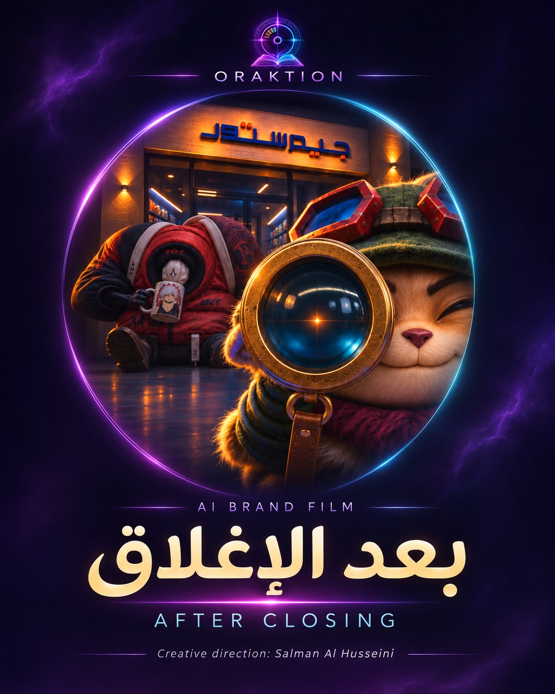

فكرة لها مقصد
نبدأ بالمنتج والجمهور والرسالة؛ ثم نكتب الفكرة والنص ونبني اتجاهها البصري.

AI Creative Director & Multimedia Creator
أبتكر الأفكار والقصص، وأحوّلها بالـAI إلى أفلام وإعلانات وعوالم بصرية وصوتية. أجمع خبرة المونتاج والصوت وفهم التسويق في أعمال تحمل هوية أوراكشن.
جلسة الرؤيةاستكشف كيف تتحوّل الفكرة إلى مشهد، واختر مسار مشروعك أو تعرّف إلى مساهمتي داخل فريقك.
ادخل جلسة الرؤية ↗01 / أعمال أوراكشن، برؤية سلمان
شاهد ما يمكن أن تصنعه الفكرة لعلامة أو خدمة أو حكاية. اكتشف اختياراتي الإبداعية، ثم كوّن تصورًا يناسب مشروعك.
ما الذي تريد أن نصنعه؟
Salman Al Husseini — من تطوير الفكرة إلى إخراج الصورة والصوت. مساهماتي وأسماء المتعاونين موضحة داخل كل عمل.
استكشف عالم أوراكشن@oraktion.ai ↗02 / من المشاهدة إلى مشروعك
أخبرنا بما تريد أن يراه جمهورك ويشعر به. نصنع الفكرة، ثم نختار لها لغة الصورة والحركة والصوت.
03 / الدقة التي تصنع الفرق
الصورة الجميلة بداية. الإخراج يجمعها في مشهد له مقصد: شخصية واضحة، ضوء يخدم المزاج، حركة مترابطة، وإيقاع يمنح الحكاية نبضها.
نبدأ بالمنتج والجمهور والرسالة؛ ثم نكتب الفكرة والنص ونبني اتجاهها البصري.
نراجع تفاصيل الشخصيات والبيئة والإضاءة، ونختار اللقطات التي تنتمي إلى الحكاية.
المونتاج والمؤثرات والموسيقى والأداء الصوتي تعمل معًا لتوجيه الإحساس.
نكيّف العرض ومقاساته مع منصة النشر، ونربط التنفيذ بهدف المحتوى.
04 / ما وراء الإعلان
قصص فانتازيا وأعمال مرئية منشورة على أوراكشن؛ مساحة تتسع فيها الأفكار وتتحول إلى حكايات وعوالم.
05 / الصوت والغناء بالـAI
نماذج لسرد فصيح بأصوات AI مدرّبة لأداء النصوص، وغناء بالذكاء الاصطناعي. يتضح مع كل نموذج كيف وجّهت النص والصوت والمشهد، وأين شارك الأداء البشري.
06 / سلمان، وراء الفكرة والتفاصيل
AI Creative Director & Multimedia Creator
بدأت رحلتي الإبداعية من المونتاج، وطوّرت خبرتي في الصوت والأداء والتسويق والكتابة. اليوم أبتكر الأفكار والقصص، وأحوّلها بالذكاء الاصطناعي إلى أفلام وإعلانات وأصوات وألحان.
تدعم رؤيتي الإخراجية خبرتي كممثل صوتي ومؤدّي فويس أوفر؛ من بناء الشخصية ونبرة الإلقاء إلى إيقاع المشهد. وأقود فريق السهم القرمزي للدوبلاج، مع الإشراف على الأداء ومراجعة تفاصيل العمل.
أجمع الإخراج والمونتاج والمعالجة الصوتية مع الكتابة والتدقيق بالعربية الفصحى وفهم التسويق. أوراكشن هي العالم الذي تتجسد فيه هذه الرؤية، من ابتكار الفكرة إلى مراجعة صورتها النهائية.
استمع إلى نماذج أدائي الصوتي ↙السيرة الذاتية متاحة عند الطلب عبر التواصل المباشر.
شركة براند للدعاية والإعلان، 2014–2021. تسويق تطبيقَي Tender Square ومناسباتي، مع تسجيل 200 شركة خلال عقد شهر واحد لتطبيق Tender Square. قيادة حملات إعلانية لمرشحين والتنسيق الإعلامي، وإدارة النشر وحسابات التواصل وخطط المحتوى المبنية على دراسة السوق والجمهور وفهم خوارزميات المنصات.
العربية الفصحى بطلاقة. اجتياز المستوى الخامس في بوابة الجامعة الأردنية. دورة Photoshop بتقدير ممتاز، 2024. الثانوية العامة، القسم العلمي، 2008.
07 / الصوت الذي يكمّل المشهد
صوتي في شخصيات بشرية وأنمي وكرتون وألعاب، إلى جانب التعليق والمناسبات. اختر النوع واستمع إلى اختلاف النبرة والشخصية؛ مساهماتي واعتمادات فريق السهم القرمزي موضحة مع كل عمل.
لنبدأ بحكايتك أنت
منتج، خدمة، عالم خيالي، أو فكرة لم تجد صورتها بعد. أرسل وصفًا بسيطًا لما تريد تقديمه ولمن؛ ومن هنا تبدأ الحكاية.
+965 6997 5288